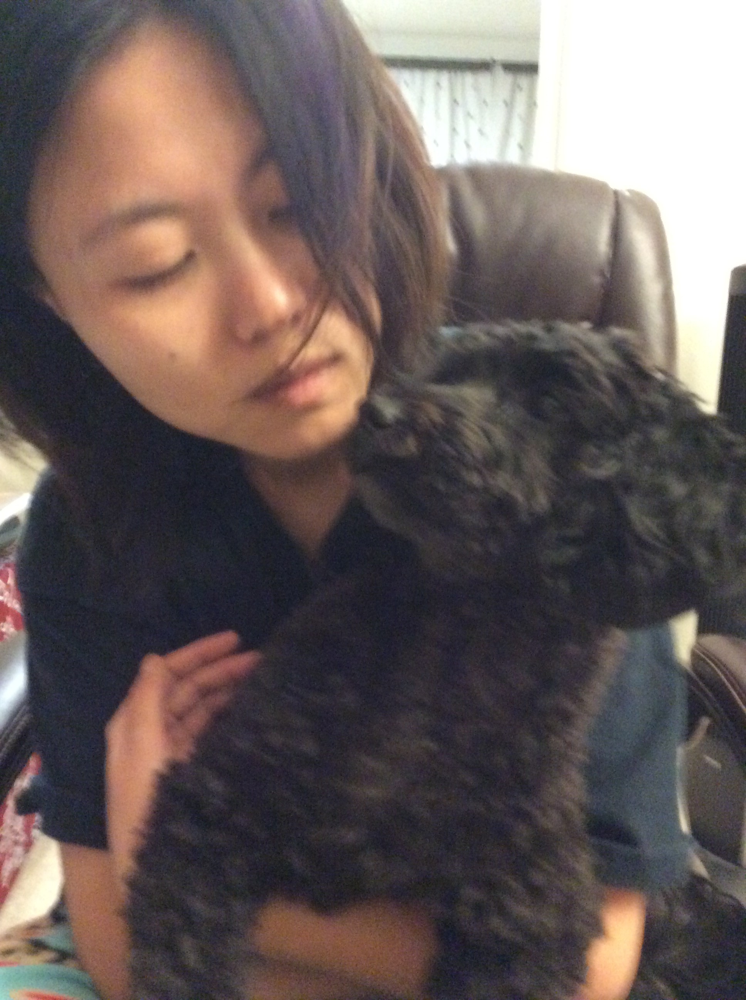

About Me
Hello! My name is Lea Li, and I'm excited to share a little bit about myself. I'm currently taking this web development course purely out of personal interest. Exploring new technologies has always intrigued me, and learning how to create websites is something I've wanted to do for a long time.
Why I Took This Course
I have experience with Web 152, which gave me an introduction to the basics of web design. This course is a continuation of my personal interest in web development. I'm eager to dive deeper into HTML, CSS, and web technologies to further improve my skills and explore new ways of creating websites.
Hobbies
- Reading crime mystery novels
- Playing video games
- Exploring new things
- Watching Japanese animation